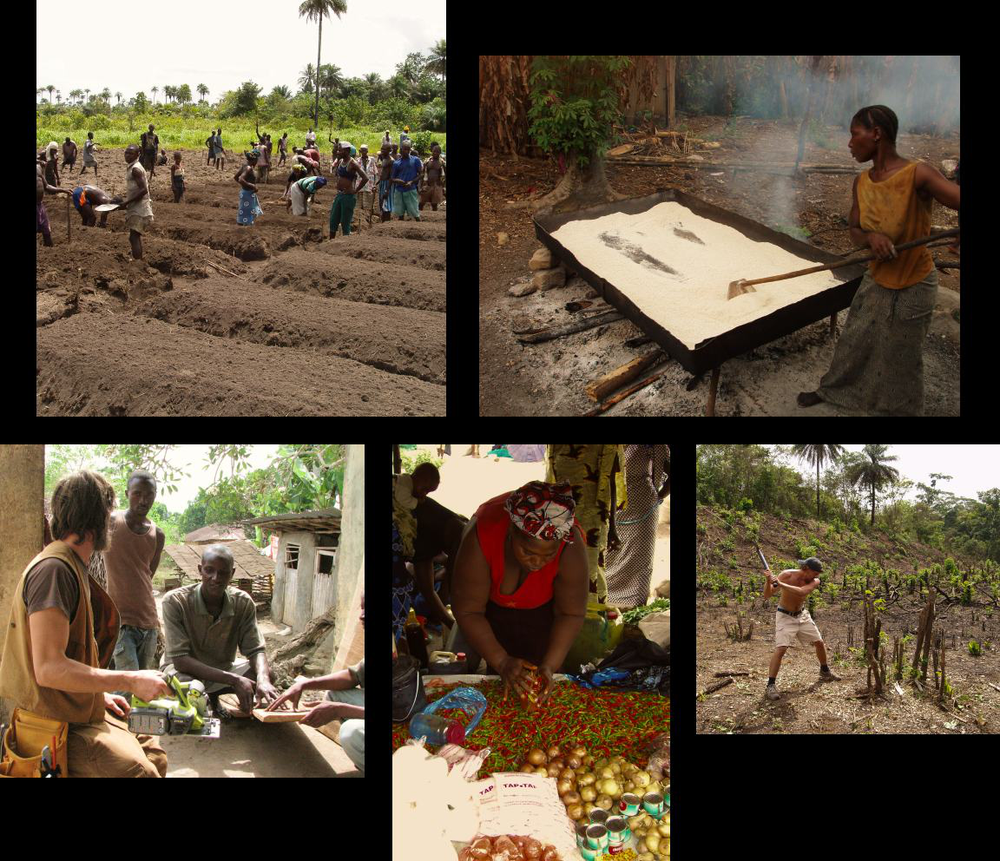
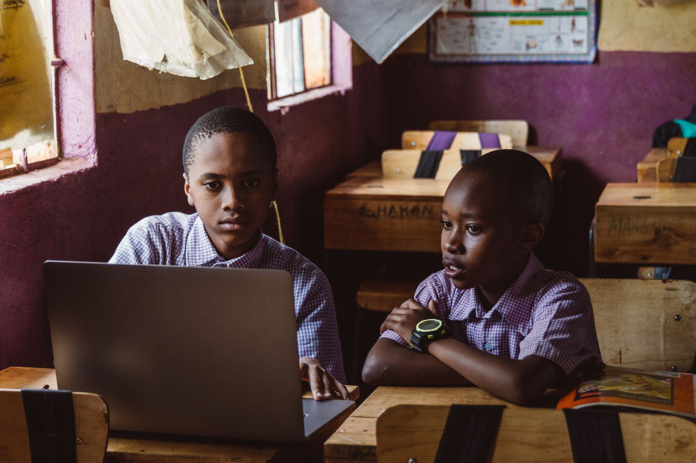

Tech & Digital Operations
Support websites, data, and digital campaigns across the organisation.
Apply →
A 1-year immersive placement for school leavers to work alongside AYM leadership, build real-world experience, and launch their careers.
The AYM Youth Fellowship is designed for young people finishing school who are ready to work—but who need experience, mentorship, and a foothold. You won't fetch coffee: you'll own real projects.

Work alongside AYM leadership and experienced professionals.
Build a portfolio and a reference you can prove.
Exceptional fellows are retained as staff or referred to our partner network.
Learn the mission, systems and teams.
Own your first real deliverables.
Lead a project and mentor newer fellows.
Graduate with a portfolio and references.
Recent secondary school leavers ready for a one-year, full-time commitment.
One of four tracks: Tech & Digital, Agribusiness, Project Management, or Ecotourism.
Tracks combine on-site work in Sierra Leone with online collaboration.
You graduate with a formal reference, a portfolio, and career-pathway support.
Can't find the answer you're looking for? Please chat to our friendly team.